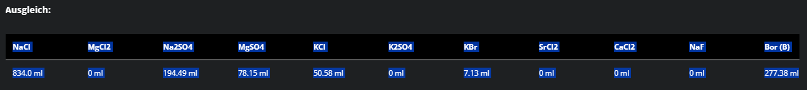
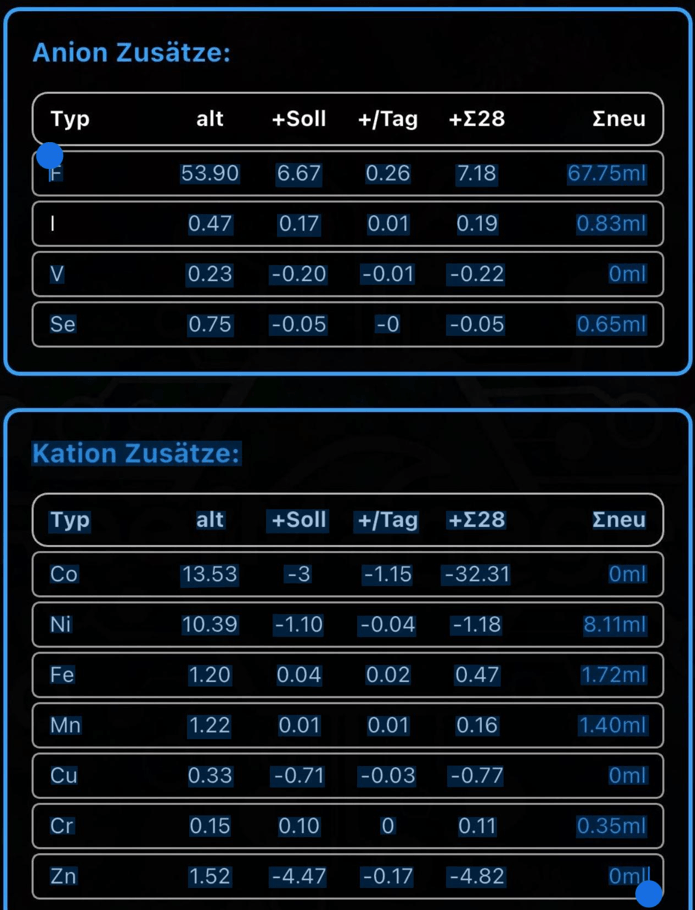

Gerätestatus & System
📡 Hardware-Monitor
Vorsicht: Löscht alle Bestände und WLAN-Daten!
Dein Osci-Lager Guide
Präzision für dein Riff – einfach und effizient.
Ein gesundes Aquarium braucht Beständigkeit. Das Osci-Lager sorgt dafür, dass du nie wieder vor leeren Flaschen stehst oder mühsam ml-Stände schätzen musst.
📦 Das digitale Regal (Dashboard)
Im Lager behältst du die volle Kontrolle über alle Zusätze:
- Zukauf (+): Ein Klick auf das grüne Plus lässt dich vordefinierte Gebindegrößen sofort hinzufügen.
- Entnahme (-): Über das rote Minus gibst du individuelle Mengen ab. Das System berechnet den Restbestand in Echtzeit.
- ICP-Ninja: Ocean Checks ziehst du per Klick sofort ab. Schnell und unkompliziert.
- Prognose: Kleine Pfeile (↑ ↓ →) zeigen dir direkt neben dem Bestand, ob dein Verbrauch im Vergleich zur letzten Dosierung steigt oder sinkt.
📈 Statistik & Trend-Analyse
Daten sind der Schlüssel zum Erfolg. Die App wertet deinen Verbrauch für dich aus:
- Verbrauchs-Graph: Unter dem Punkt "Statistik" siehst du die letzten 12 Entnahmen als Verlaufskurve.
- Trendlinie: Die rote gestrichelte Linie im Graph zeigt dir die mathematische Tendenz. Steigt dein Dosierbedarf oder sinkt er?
📊 Der Import-Assistent
Importiere deine Verbräuche ohne mühsames Abtippen. Kopiere einfach die Daten direkt in das Importfeld:
🛠️ Custom & Repair (Osci-Motion)
Importiere einfach die Daten wie auf dem Bild unten, um deinen Verbrauch der Custom & Repair Lösung zu dokumentieren. Kopiere dazu die Ergebnistabelle (Namen und ml-Werte) aus dem Rechner.

📱 ReefManager App (OCR-Import)
Du kannst aus der ReefManager App per Screenshot die Werte als "Text" kopieren. Nutze dazu die Texterkennung (OCR) deines Smartphones auf dem Screenshot deiner Dosierwerte.

- Der Jod-Fix: Da das Kürzel "I" oft als "1" erkannt wird, korrigiert die App dies automatisch.
⚖️ Das Labor (Messstation)
Nutze die Physik für 100% Präzision:
- Wähle dein Produkt und die Flaschengröße aus.
- Stelle die Flasche auf eine Waage und gib das Gewicht in Gramm ein.
- Die App berechnet über die Dichte den ml-Stand und überschreibt deinen Lagerbestand.
🚀 Support & Entwicklung
Hast du einen Fehler gefunden oder eine Idee für ein neues Feature?
Bug oder Feature auf GitHub meldenVersion 1.2.0 | Handbuch Stand: April 2026
☕ Buy me a Coffee
Dir gefällt dieses Tool? Ich freue mich riesig über eine kleine freiwillige Unterstützung für die Weiterentwicklung!
🥤 SPENDE VIA PAYPAL